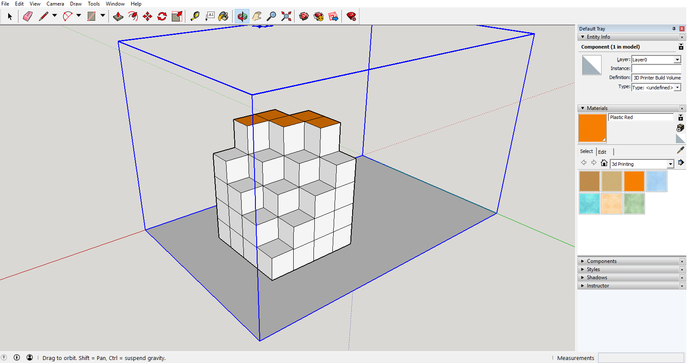

I woke up way earlier than I was supposed to, and spent most of my time trying to figure out how to take a bath without a bucket. But that got solved sooner than I thought, and I made it to the venue early.
The entire day flew by really fast, we formed teams, started pitching in ideas, and we were ideating (all the while learning what it means to ideate), found solutions, learned CAD in a few hours, 3D printed our designs, well, I didn’t 3D print my design because I didn’t know what to make, and I ended up making a weird dismantled cube. I decided to print it later.

The later half of the class was spent on learning the Arduino Uno and tinkering around; we were given projects to make a children’s toy, something that would help the child learn something. After an initial round of brainstorming, with my team which consisted of Anand Joshi, Diwakar V, Aathikesava and myself, it was clear that we didn’t have good enough chemistry and we had some communication issues, mostly because Diwakar couldn’t understand english very well, which made teamwork much harder, so I decided to switch it up a little.
After dinner, I tried a different method and engage better with my teammates, and though that did have some initial success, we couldn’t come up with a good solution on time, so we decided to reconvene in the morning and work on the idea, also because I was starting to run out of energy because I was so excited the previous day that I only managed to get two hours of sleep.